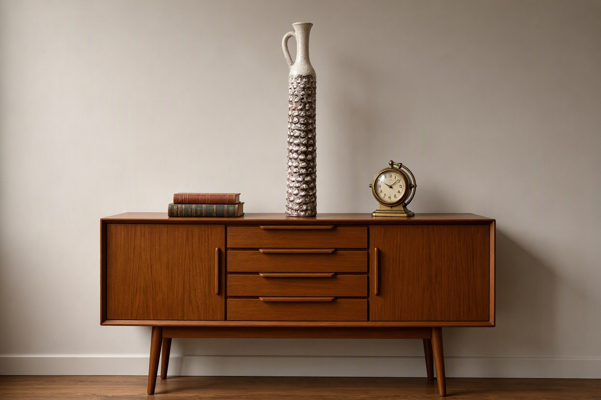

01 / THE OBJECT
Things made to last.
Objects made to be used, lived with, admired, collected and preserved. We look at form, function, workmanship, provenance and the histories that accumulate around remarkable things.
Furniture / Antiques / Games / Design / Domestic objects